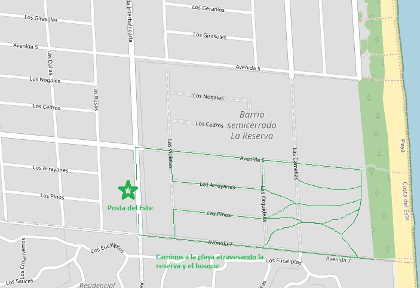

El lugar
Bosque de pinos, reserva ecológica y playa atlántica a minutos caminando.
Cómo llegar a la playa
Senderos peatonales que atraviesan el bosque de pinos desde Posta del Este hasta la playa atlántica.

Recorridos posibles desde la casa a la playa — senderos peatonales a través de La Reserva y el bosque de pinos.
A 4 cuadras
Desde el predio podés llegar a la playa en 5 minutos caminando, por la bicisenda asfaltada que atraviesa la reserva. Una experiencia muy diferente a la de los balnearios masivos — la playa de Costa del Este es tranquila, familiar, con arena firme y oleaje atlántico.
Frente al predio
El predio está frente a la reserva ecológica y rodeado de pinos. El microclima que generan es notable: sombra, aroma, pájaros, temperatura más fresca. El tipo de descanso donde te olvidás de la pantalla.
A 6 cuadras
Supermercados, almacenes, restaurantes y parrillas a pocas cuadras. Costa del Este tiene todo lo necesario sin el ruido de los balnearios grandes. Zona segura, calles tranquilas, comunidad familiar.
🚲 Todo accesible a pie o en bici. El centro, la playa y la reserva quedan dentro de un radio de 6 cuadras del predio.
Escribinos, respondemos todas tus dudas.